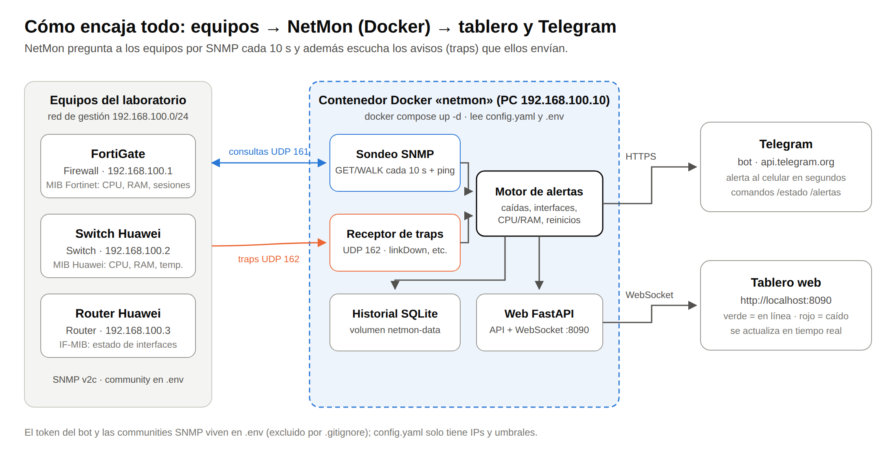
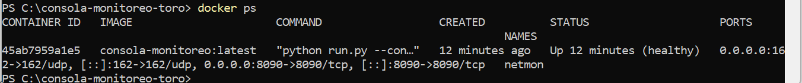
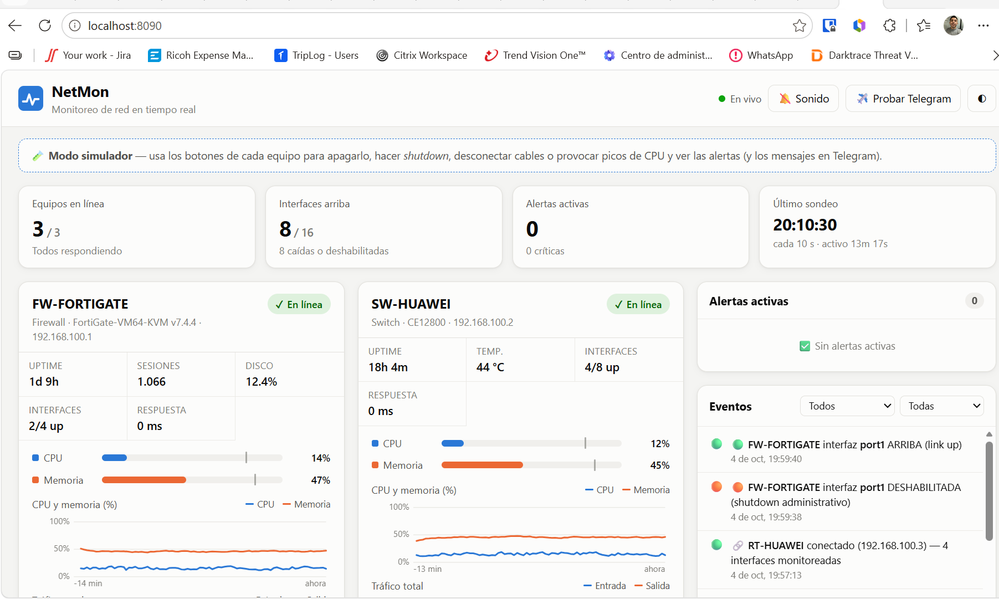
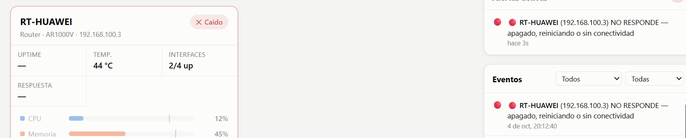
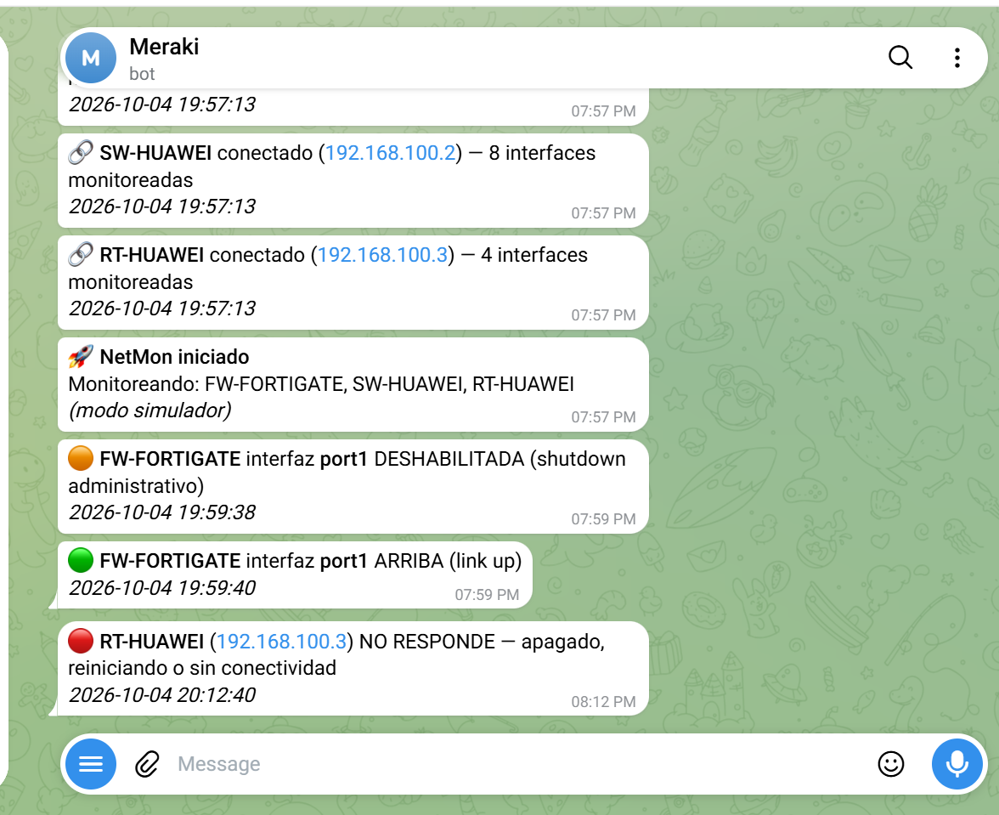

FortiGate, switch Huawei y router Huawei vigilados por SNMP desde un tablero web propio, desplegado con Docker.
NetMon es una consola de monitoreo desarrollada desde cero en Python. Vigila tres equipos de red del laboratorio, muestra su estado en un tablero web en tiempo real y envía una alerta a Telegram cuando algo falla. No usa herramientas de terceros como Zabbix o Grafana: el sondeo SNMP, el motor de alertas, el tablero y el bot son código propio. Todo corre dentro de un contenedor Docker.
/estado, /interfaces y /alertas.| Evento | Cómo se detecta | Severidad |
|---|---|---|
| Equipo apagado o sin conexión | Fallan SNMP y ping en 2 sondeos seguidos | Crítica |
| Equipo recuperado (indica si se reinició) | Vuelve a responder; se compara el uptime | Informativa |
| Interfaz caída | ifOperStatus = down o trap linkDown | Crítica |
| Interfaz en shutdown | ifAdminStatus = down | Advertencia |
| CPU, memoria, temperatura o disco altos | Umbral superado en 2 sondeos seguidos | Advertencia |
| Responde ping pero no SNMP | Diagnóstico de community o ACL | Advertencia |
| Equipo | Rol | IP de gestión | Información obtenida (MIB) |
|---|---|---|---|
| FortiGate | Firewall | 192.168.100.1 | CPU, memoria, sesiones y disco (FORTINET-FORTIGATE-MIB); interfaces (IF-MIB) |
| Huawei S57xx | Switch | 192.168.100.2 | CPU, memoria y temperatura (HUAWEI-ENTITY-EXTENT-MIB); interfaces (IF-MIB) |
| Huawei AR | Router | 192.168.100.3 | CPU, memoria y temperatura (HUAWEI-ENTITY-EXTENT-MIB); interfaces (IF-MIB) |
| PC con Docker | Servidor NetMon | 192.168.100.10 | Ejecuta el contenedor; recibe traps en UDP 162 |
En cada equipo se habilitó SNMP v2c de solo lectura. El acceso está restringido a la IP del servidor: con una ACL en los Huawei y con la lista de hosts en el FortiGate. Los equipos envían sus traps a esa misma IP. Los comandos exactos están en la carpeta configs/ del repositorio.

Los secretos (token del bot, chat_id y communities SNMP) están en el archivo .env, que Docker inyecta al contenedor y que .gitignore excluye del repositorio. El archivo config.yaml solo contiene IPs y umbrales.
En cada equipo se aplicó la configuración de configs/, que hace tres cosas: activar SNMP v2c de solo lectura, permitir el acceso solo desde 192.168.100.10 y enviar los traps a esa misma IP. Por ejemplo, en el switch Huawei:
snmp-agent sys-info version v2c snmp-agent community read cipher ******** acl 2099 snmp-agent target-host trap address udp-domain 192.168.100.10 params securityname cipher ******** v2c snmp-agent trap enable
Se copió .env.example como .env, se llenaron el token, el chat_id y las communities, y se levantó el contenedor con docker compose up -d --build. Para verificar que quedó corriendo y publicando los puertos 8090/tcp y 162/udp se usó docker ps.

docker ps).En http://localhost:8090 el tablero muestra los tres equipos en verde con su uptime, CPU, memoria, gráficas y la tabla de interfaces. Telegram recibe el mensaje «NetMon iniciado» y uno de «conectado» por cada equipo.

Se apagó o desconectó uno de los equipos. Tras dos sondeos sin respuesta (unos 20 s), el tablero lo marcó en rojo como «Caído», con la alerta crítica en el panel de alertas activas.

En el mismo momento el bot envió la alerta «🔴 … NO RESPONDE» al chat configurado. Al encender el equipo de nuevo llegó «🟢 volvió a responder», indicando si se reinició.

docker compose up -d la consola corre igual en cualquier PC. Cambiar de laboratorio o pasar a equipos de producción solo requiere editar las IPs en config.yaml./estado desde cualquier lugar..env, excluido por .gitignore, permite publicar el repositorio sin exponer credenciales. Como mejora futura se propone migrar a SNMPv3 (autenticación y cifrado) y agregar más equipos y umbrales por equipo.